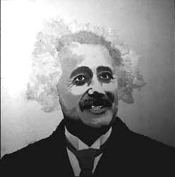

| pop sci |
 |
For FolksEinstein's favorite philosopher, Spinosa, once remarked, "The beauty is in the details." Einstein's most famous equation equates energy and mass, "E = m c^2". Artists and physicists alike omit a foreign detail. The equation with broader truth as initially published by Einstein is "E = gamma m c^2". Without the Greek letter, the equation is actually quite dull. M stands for mass. Everyone everywhere agrees about the mass. C is the speed of light. Everyone everywhere agrees about the speed of light. But gamma! That depends on who you are, how you view things. In art as in physics, how things look depends on your viewpoint. |
For Nerds"E = m c^2" is true only for that one class of inertial observers where gamma = 1. Mass is Lorentz invariant, the speed of light is a universal constant, so the equation implies a dull role for energy. Yet energy is anything but dull. This implies that the focus of attention in this equation should be placed on the gamma. Is gamma merely an adjustment one makes for different inertial observers, or is this what the equation is actually about, the ratio of energy to rest mass? My work focuses on gammas in equations because they can change, and only change can be observed. |